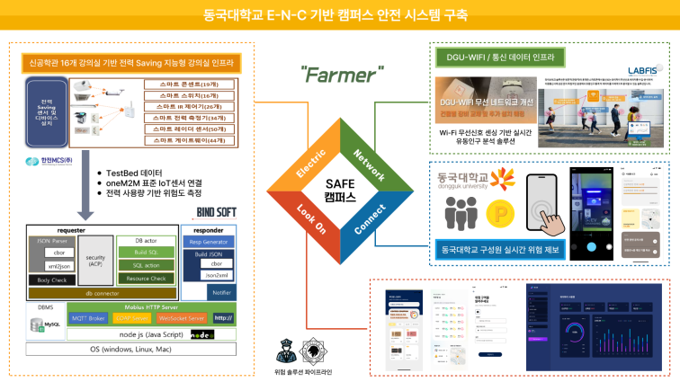

‘루크온’ E-N-C 기반 위험 대응 및 안심 캠퍼스 구축 시스템 E-N-C Campus Risk Response and Safety System
전력(IoT), 네트워크(Wi-Fi), 사용자 참여 데이터를 통합해 실시간 밀집도 분석·위험 구역 탐지·모바일 신고를 지원하는 캠퍼스 안전 관리 서비스.
A campus safety service integrating electricity-use IoT data, Wi-Fi data, and user reports for real-time crowd-density analysis, risk detection, and mobile incident reporting.
- 참여 기간Period
- 2024.11
- 담당 역할My Role
- 인프라 구축 및 프론트엔드 개발Infrastructure setup and frontend development
개요Overview
‘루크온’은 캠퍼스의 사건·사고와 인파 밀집에 대응하기 위해 개발한 안전 관리 시스템입니다. 교내 테스트베드에서 수집하는 전력·네트워크 데이터에 구성원의 위험 제보를 결합해, 캠퍼스 상황을 파악하고 위험 구역을 탐지하며 모바일로 신고할 수 있는 서비스를 구축했습니다.
This E-N-C campus safety system was developed to address incidents and crowding. It combines electricity and network data from the campus testbed with reports from campus members, supporting situational awareness, risk-area detection, and mobile reporting.
해결하고자 한 문제Problem
캠퍼스 내 사건·사고와 인파 밀집을 실시간으로 파악할 안전 관리·위험 감지 체계가 필요했습니다. 기존 시스템의 외부 접근 제한 때문에 실시간 데이터 수집이 어려웠고, 여러 시스템에 분산된 데이터를 활용해 인구 밀집도를 분석하는 데에도 한계가 있었습니다.
Campus incidents and crowding called for real-time safety monitoring and risk detection. Access restrictions in existing systems made live data collection difficult, while data distributed across separate systems limited crowd-density analysis.
접근 방법Approach

- 통합 데이터 파이프라인: 전력(IoT), 네트워크(Wi-Fi), 사용자 참여 데이터를 함께 활용할 수 있도록 수집·연결하는 파이프라인을 구축했습니다.
- 테스트베드 데이터 활용: oneM2M 기반 IoT 센서와 전력 사용량 정보를 활용하고, Wi-Fi 기반 유동인구 정보를 결합해 캠퍼스 밀집도와 위험 구역을 분석했습니다.
- 모바일 신고 시스템: 캠퍼스 구성원이 위험 상황을 직접 제보할 수 있는 사용자 참여 기능을 개발해, 인프라에서 수집한 데이터와 현장의 신고를 함께 활용했습니다.
- 안전 관리 화면: 실시간 밀집도 분석, 위험 구역 탐지, 사용자 신고 기능을 캠퍼스 안전 관리 서비스로 통합했습니다.
- Integrated data pipeline: Built a pipeline that connects electricity-use IoT data, Wi-Fi network data, and user-contributed reports.
- Campus testbed integration: Used oneM2M-based IoT sensor and electricity-use data alongside Wi-Fi-based foot-traffic information to support crowd-density and risk-area analysis.
- Mobile incident reporting: Developed a reporting interface so campus members could contribute observations alongside infrastructure data.
- Safety management interface: Brought real-time density analysis, risk-area detection, and user reports together in a campus safety service.
담당 역할My Role
인프라 구축 및 프론트엔드 개발을 담당했습니다. 교내 테스트베드 데이터를 서비스에 연결하는 인프라를 구축하고, 안전 관리 정보와 모바일 신고 기능을 제공하는 사용자 화면 개발에 참여했습니다.
I was responsible for infrastructure setup and frontend development. I worked on infrastructure connecting campus testbed data to the service, and on user interfaces for safety information and mobile incident reporting.
결과 및 수상Results & Recognition
- 실시간 밀집도 분석, 위험 구역 탐지, 사용자 참여 기반 신고 기능을 포함한 캠퍼스 안전 관리 서비스 구축.
- 실시간 캠퍼스 테스트베드 데이터를 통합하고 서비스에 활용한 경험 확보.
- 2024년 동국대학교 AI융합대학 해커톤 ICONICTHON(아코톤) 대상 수상.
- Built a campus safety service with real-time crowd-density analysis, risk-area detection, and user-contributed incident reports.
- Gained experience integrating and using live campus testbed data in an application.
- Grand Prize, ICONICTHON 2024 Hackathon, College of AI Convergence, Dongguk University.